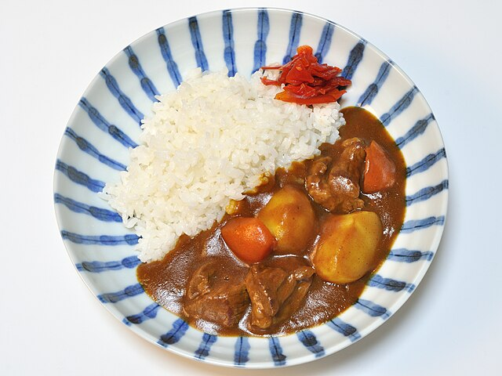

Go back
Curry recipe

Description
This easy-to-make curry is perfect for a weeknight dinner, offering a quick burst of aromatic flavor.
It combines tender chicken and fresh vegetables in a creamy, spice-infused coconut milk sauce.
Ingredients
- 1 tablespoon vegetable oil.
- 1 pound boneless, skinless chicken breast, cut into 1-inch pieces.
- 2 tablespoons red curry paste (Thai-style is easiest).
- 1 can (13.5 oz) full-fat coconut milk.
- 1 cup frozen mixed vegetables (e.g., peppers and green beans)
- Cooked rice (for serving)
Steps
- Sauté Chicken: Heat the vegetable oil in a large pot over medium-high heat. Add the cubed chicken and cook until lightly browned on all sides, about 5 minutes.
- Add Paste: Reduce the heat to medium. Stir in the red curry paste and cook for 1 minute until fragrant, ensuring the chicken is coated.
- Simmer Sauce: Pour in the coconut milk. Bring the mixture to a gentle simmer, stirring to dissolve the paste.
- Add Vegetables: Add the frozen mixed vegetables. Continue to simmer uncovered for 8-10 minutes, or until the chicken is fully cooked and the vegetables are tender.
- Serve: Serve the curry hot over cooked rice.